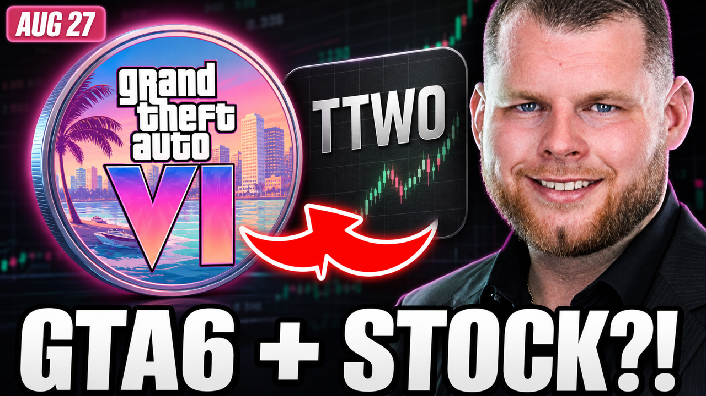

RECORDING CONSOLE · CRYPTOGODJOHN · GTA6

CryptoGodJohn just backed a GTA6 microcap before Rockstar's next reveal...
CryptoGodJohn has made GTA6 his newest high-conviction meme-coin idea. Rubicon caught a John buy before he posted the thesis on @0x0papi, then he took it to his main account: GTA VI attention, Rockstar's August 27 reveal and a token that rewards holders in TTWO. John has posted about it constantly since. The three recording tabs put the whole story in order: all 75 posts across both accounts, the GTA6 chart from the first alert onward and the five buys our tracker caught. Ben can start with what John said, move straight to what the chart did and finish on the first buy alert.
The tabs open backwards so they land in the right Arc order. Keep this dashboard open and allow popups.